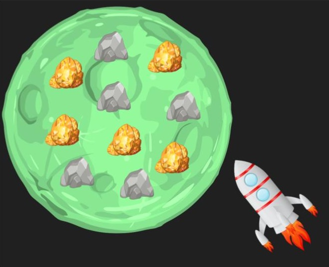

Real-World Free-Operant (V2.0) Configuration

Notes:
This web page was designed to enable researchers interested in using the Real-World Free-Operant app to
easily edit the main setup file (named settings.js).
About the app:
- The app was first published by Gera et al. See the
preprint.
- See a demo of the app.
- The app can be downloaded from here.
Download the RWFO_app_V2 folder from the repository. The file formed here was designed to be integrated with
a new version (V2.0) we created. This version is enriched with more
functionalities to potentially accommodate a large variety of potential research questions.
About creating the settings.js file:
- The parameters below are pre-set to match the parameters used in the original study.
- You can set them as you see fit.
- Once you finish, click on the "Create the settings.js file" button below and replace the existing
settings.js
(in the app main folder).
- See notes regarding each parameter.
- Note that some parameters are contingent on others (this will be clearly
indicated). You can ignore parameter values that other parameters make them unused.
- Important: while we created this page to accommodate the tuning of many parameters, more parameters can be
edited manually in the settings.js file (it is structured like a json file).
- We strongly encourage researchers to run some tests after setting the parameter file (this is a new version
and we
couldn't exhaustively test all
the variable/parameter combinations).
- If you have any questions, interested in other functionalities or wish to collaborate, please
contact us.